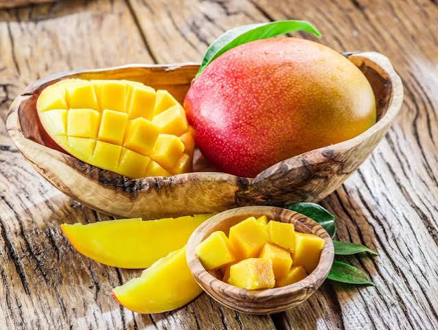

Mango
Inicio
Lema Oficial
Sabores - Gastronomia y Tradicion
Saberes - Conocimiento Cientifico y Ancestral
Salud - Alimentacion y Bienestar
Nuestro Territorio
El mango se cultiva ampliamente en las zonas cálidas del Caribe colombiano, incluyendo los valles y sabanas de Córdoba. Su presencia es tan común en patios, fincas y caminos rurales que forma parte del paisaje cotidiano de la región del Sinú, donde ha sido durante generaciones fuente de alimento, sombra y sustento económico para familias campesinas.
Nombre Comun: Mango
Nombre Científico: Mangifera indica L.
Caracteristica (Plantas y frutos)
El árbol de mango es de porte grande, con copa frondosa que puede superar los 20 metros de altura y hojas alargadas de color verde oscuro. Sus frutos son drupas carnosas de forma ovalada, con una cáscara que varía entre verde, amarillo y rojizo según la variedad, y una pulpa jugosa, fibrosa y dulce que rodea una semilla grande y aplanada.
Condiciones de cultivo
El mango se desarrolla mejor en climas cálidos y secos, con temperaturas entre 24 y 30 °C y una estación seca definida que favorece la floración. Prefiere suelos profundos, bien drenados y con buena exposición solar, condiciones que se encuentran de forma natural en buena parte del departamento de Córdoba.
Receta y Saberes Tradicionales
En la cocina tradicional cordobesa el mango se consume fresco, en jugos, dulces en almíbar y el tradicional 'mango biche' con sal, limón y a veces ají, muy popular como pasabocas callejero. También se usa verde para preparar ensaladas ácidas y encurtidos que acompañan platos típicos de la región.
Donde se ubica
Se cultiva en casi todo el territorio cordobés, especialmente en zonas rurales del Bajo y Medio Sinú, así como en huertos familiares de Santa Cruz de Lorica y municipios vecinos, donde crece de manera espontánea junto a otros frutales tradicionales del Caribe.
Informacion Nutricional
El mango es una fruta rica en vitamina C y vitamina A, además de contener fibra, potasio y antioxidantes naturales como los carotenoides. Una porción promedio aporta pocas calorías en relación con la cantidad de nutrientes que ofrece, lo que lo convierte en una opción saludable para incluir en la dieta diaria.
Epoca de cosecha
En el Caribe colombiano el mango suele tener su mayor producción entre febrero y junio, coincidiendo con la temporada seca, aunque en algunas variedades y zonas puede presentarse una segunda cosecha más pequeña hacia finales de año.
Beneficios
Además de su valor alimenticio, el mango es una fuente importante de ingresos para pequeños productores de la región, ya sea mediante la venta directa de la fruta o de productos derivados como pulpas, jugos y dulces artesanales que dinamizan la economía local.
Galeria


Beneficios Para la salud
El consumo de mango contribuye al fortalecimiento del sistema inmunológico gracias a su alto contenido de vitamina C, favorece la salud digestiva por su aporte de fibra y ayuda a proteger las células del cuerpo frente al daño oxidativo gracias a sus antioxidantes naturales.
Importancia Cultural
El mango forma parte de la memoria colectiva de las familias cordobesas: es común recordar la infancia trepando matas de mango o compartiendo la fruta entre vecinos. Esta tradición de intercambio y disfrute comunitario lo convierte en un símbolo de la identidad campesina del Caribe colombiano.